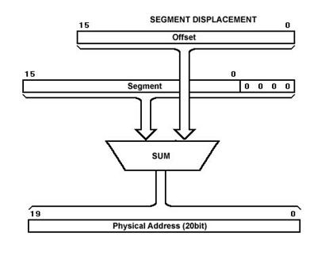

Assembly Language
Assembly Language is a lower level hierarchy of programming languages designed to interact with specific type of processor. It is basically human readable form of machine language. Assembly language has a very strong correspondence with the computer-architecture being used and utilise almost no abstraction.Assembly language uses opcode to provide instructions.
In order to convert an assembly program
.asm to machine code an assembler is used,
which
converts the .asm file to object file .o and then linker merges the object
files to
generate a single executable file. Memory Segment
The memory of system is divided into three segments namely -- Code Segment -
It is represented by
.textsection of assembly code. It stores the instruction code. Code Segment registerCSpoints to start address of this memory segment. - Data Segment -
It is represented by
.datasection and.bsssection of assembly code. It holds data elements of program.Data Segment registerDSpoints to start address of this memory segment. - Stack -
This segment contains data values passed to functions and procedures within the program.
Stack Segment register
SSpoints to start address of this memory segment.
Physical Address Calculation
The physical address of data or instruction to be fetched that is stored in memory is calculated by the processor using the following formula -Physical Address = Segment Address * 16 +
Offsetwhere segment address is given by segment resister and offset by Instruction pointer
IP.
